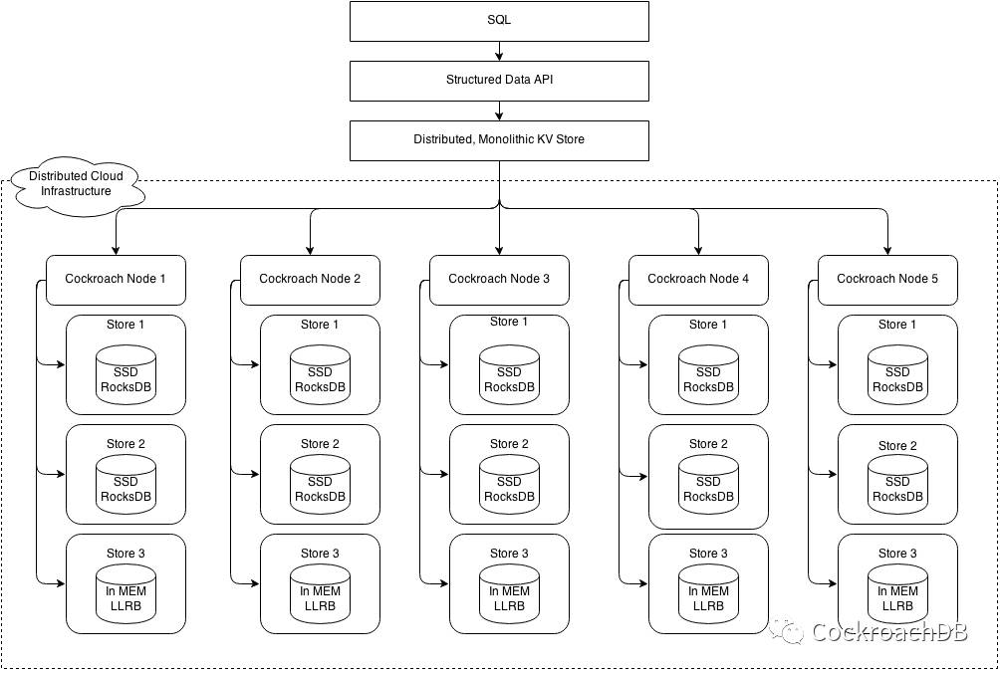

CockroachDB介绍¶
什么是CockroachDB？¶
CockroachDB是一个分布式的SQL数据库。它建立在支持事务且具有强一致性的KV存储引擎的基础之上；能够进行水平拓展；能够在不需要人工干预的情况下，以最小的中断延迟来恢复硬盘、机器、机架乃至数据中心级别的故障；能够支持强一致性的ACID事务；能够提供一套用户熟悉的SQL API来组织、管理和查询数据。
CockroachDB灵感来源于Google的Spanner和F1技术，是一个完全开源的技术实现方案。
CockroachDB特性¶
1. 线性拓展¶
可无限添加节点，拓展节点时不用操作别的节点，方便且容易.
2. 强一致性¶
单个Range的多个副本通过Raft协议进行数据同步。
序列隔离事务、Raft共识算法写、自定义时钟同步读。
MVCC数据模型限制了读效率。
当写事务获得大多数节点同意后才能提交。
使用时间戳保证读写事务互不影响。
3. 高可用性（容错容灾）（自动备份）¶
当不超过大多数节点失效时，仍能保持正常读写数据。当某个节点或分区出现故障时，系统能快速高效地检测到集群分离和故障，将领导权转交给能够跟绝大多数节点保持通信的可用节点。
4. 负载均衡¶
均衡各个节点的客户端访问量，避免单个节点处理过多的访问请求以至于影响集群的性能。
5. 跨云端迁移¶
默认情况下数据随机地均衡分布到集群的各个节点。为了实现数据从云端-1迁移到云端-2，可以使用硬限制功能： 集群中表数据有4个复制区域级别:Cluster,Database,Table,Row. 内部系统数据对应两个复制区域级别：Cluster,Range.
6. 可集群编排（容器管理）¶
可使用开源的Kubernetes编排系统进行管理、部署
架构图¶
